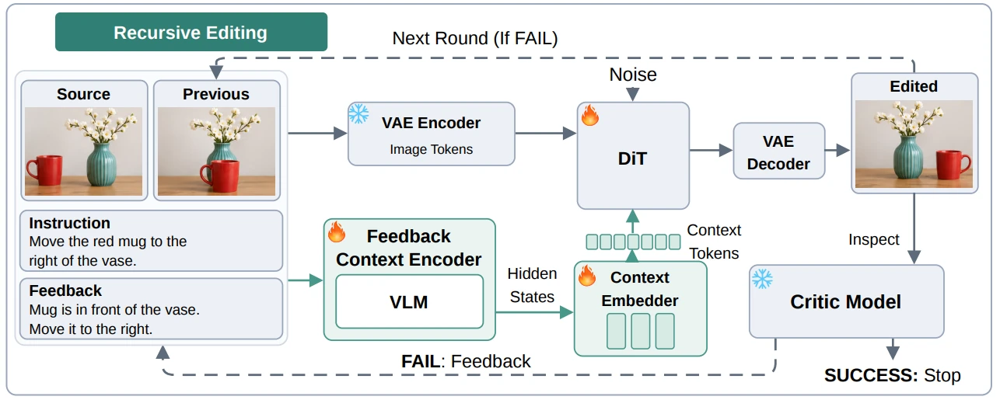

Research
I want to build adaptive intelligence: systems that bring understanding and generation
together, and adapt in real time through continuous interaction.
My work explores parts of this question through feedback-driven image editing, brain dynamics,
and agents that use structured knowledge.
Selected research

Recursive Image Editing
Research in progress · mlPC Lab, UC San Diego · Advisor: Prof. Zhuowen Tu
An image editor that learns to repair its own failed edits, using feedback from a vision-language critic, its previous attempt, and the source image.
My work: training the editor (LoRA, flow matching, and on-policy RL) and building the editing dataset.

Jiaqi Wu, Shuheng Cao, Tingting Dan, Ziquan Wei, Zhixuan Zhou, Guorong Wu
Manuscript · 2026 · ACM Lab, UNC Chapel Hill · Advisor: Prof. Guorong Wu
A Koopman-structured fMRI foundation model for learning and analyzing latent brain dynamics.
My work: the self-supervised pretraining objective, functional connectivity preprocessing, and region-level mediation analyses.

Shuheng Cao*, Weijia Zhang*, Jiaqi Wu*, Xiyun Hu, Yat Yang, Juqy Chen, Zhaoxiang Feng (*co-first authors)
arXiv preprint · 2026
Separating curriculum extraction from personalized, constraint-aware degree planning.
My work: a knowledge graph of course dependencies and AND/OR requirements as a structural prior for planning, LLM integration, and curriculum data collection.

Research project · Agent systems
AI agents for brain-network analysis, evaluated on 500+ queries.
My work: planning agent design and agent harness development.
Earlier projects & reports
SlotPhys
Object-centric physical reasoning with DINOv2 and slot attention.
Structured Syntax Learning
Character-level RNNs on LaTeX algebraic geometry · June 2025.
Google Local Review Model
Rating prediction on large datasets, with Y. Zhang, J. Wang, and R. Wang.
Nonlinear Classification
Exploring nonlinear methods for pattern classification.